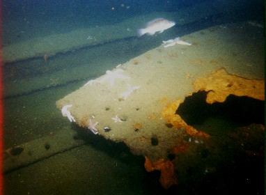

Pinthis
The 206 foot coastal tanker Pinthis burned and sank June 10, 1930 after colliding with the passenger liner Fairfax. Coming to rest upside down, the vessel lies at a depth of 100 feet.
Time and the elements have ravaged the tankers remains. As rivets corrode, iron plates fall from the hull like so many fish scales.
Lobster and crab make their homes beneath these fallen plates.

Click on image to go back to Pinthis page.
Photographic Copyright © 2000, by Keith M. McDonald
Webpage Copyright © 2000 by Christopher C. Hugo
Massachusetts Board of Underwater Archaeological Resources
All Rights Reserved
Go to Shipwrecks page
Go to MWDC home page